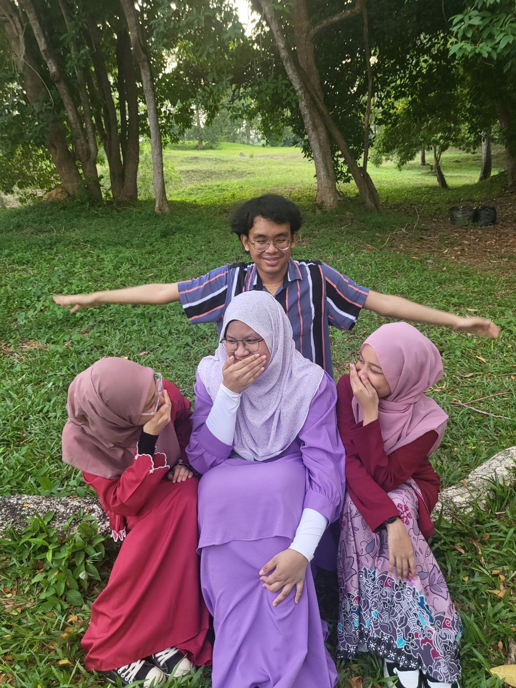

My University Friends!!
1 / 8

2 / 8
3 / 8
4 / 8
5 / 8

6 / 8
7 / 8
8 / 8
We met and started getting close in the third semester. They have had a significant impact on me because I almost wanted to quit this university due to various pressures. The three of them were my saviors during a difficult time. Their unwavering support and encouragement helped me stay on track and find the strength to continue. I truly enjoy being friends with them. They are always there to help me, whether it’s with academic challenges or personal struggles. Their ability to cheer me up and lift my spirits is something I deeply appreciate. We share a lot of laughter and good times together, making the university experience much more enjoyable and fulfilling.Not only do they support me, but they also support each other. Whenever we have assignments or projects, they are always willing to collaborate and help one another. This sense of teamwork has made our bond even stronger. I am incredibly grateful to have met them. Their friendship has made a profound difference in my life, and I can’t imagine going through this journey without them by my side. Thank you all for being such wonderful friends, and I love you all dearly.
Hi, this is me anis aka aniscomelcutecantik. As for me, Ayuni is a lively, energetic individual who radiates warmth and positivity. She's always clingy to me. what i like about her is she is really a 'don't give up' person. Ayuni is determined and resilient, she always try her best to do something and seek for help if she need to. Ayuni also loves to treat us foods or drinks, mostly she treat us 'icip-icip'. in other words she is generous. other than that, she's an excellent listener and always there to offer support and encouragement to her friends. Ayuni is truly a unique and unforgettable individual, and I feel incredibly fortunate to know her.
From my pov, i would say ayu is a bit quiet from the outside just because she wants people to stay away from her HAHAHHAHA but no, not really. she just a cute adorable human being that's too shy to communicate first. me, myself cannot believe that i got to be one of her closest friends with my crazy and weird attitudes, not until i now she's also just like me. she's someone that willing to help you with everything no matter how small it is. I love how she showed her love to someone, she's very sincere and honest but not all people really appreciated it but one thing for sure, she got a lot of love to give. she loves sunsets, and that's one of the beautiful things about her. plus, i'm so proud and glad to be her friends. i hope she knows how meaningful she is in my life. please shine like a pure white heart like you always do in your fantasy world :)
If someone doesn't know you, they won't know who you truly are since you tend to have a distinct personality when you chat to strangers or individuals you don't know well. Someone close to you can see and understand more about who you truly are. You are highly caring if someone is close to you, as if you are prepared to be there for those you care about. But never lose your trust in someone because once you do, you cut them off. Furthermore, while you may be generous and eager to help people on a regular basis, do not allow others to take advantage of your generosity. In summary, being friends with you is good; but, getting close to you is even better.